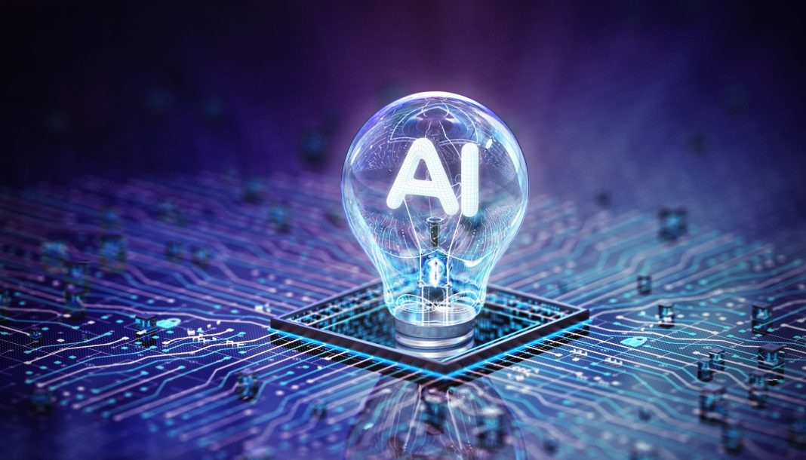

Wat is AI?
AI betekent Artificial Intelligence, oftewel kunstmatige intelligentie. Het is technologie waarmee computers taken kunnen uitvoeren, zoals vragen beantwoorden, teksten vertalen en afbeeldingen herkennen.
AI is handig, maar kan ook fouten maken. Daarom is het belangrijk om de informatie te controleren.
Waar gebruik ik AI voor?
Ik gebruik AI vooral als hulpmiddel bij school. Het kan helpen om moeilijke onderwerpen uit te leggen, teksten samen te vatten en ideeën te bedenken. Hierdoor kan ik nieuwe dingen leren.
Het is wel belangrijk om niet zomaar alles over te nemen. Door zelf na te denken en informatie te controleren, leer je er meer van.
AI op mijn mobiel
Mijn mobiel is een iPhone 15. AI kan op telefoons worden gebruikt voor bijvoorbeeld spraakassistenten, het bewerken van foto's en het vertalen van teksten. Welke functies beschikbaar zijn, hangt af van het telefoonmodel.
Artikel over AI
AI wordt steeds vaker gebruikt op school. Leerlingen kunnen het gebruiken om uitleg te krijgen en te oefenen voor toetsen. Ook kan AI docenten helpen bij het voorbereiden van lessen. Een nadeel is dat AI verkeerde informatie kan geven.
Mijn mening
Ik vind AI handig, omdat je snel uitleg kunt krijgen als je iets niet begrijpt. Toch vind ik dat je niet alles door AI moet laten doen. Je leert meer als je zelf nadenkt en de antwoorden controleert.
Let op: dit is een algemene tekst en nog geen samenvatting van een echt artikel. Voeg hier de titel en de link toe van het artikel dat je hebt gelezen.
Samenvatting van het filmpje
In het filmpje wordt meer uitleg gegeven over kunstmatige intelligentie (AI). AI is technologie waarmee computers taken kunnen uitvoeren die normaal gesproken menselijke intelligentie nodig hebben. AI kan handig zijn, maar het blijft belangrijk om kritisch te blijven en informatie te controleren.
